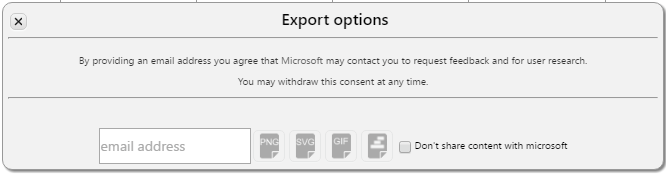

Project Team:


Timeline Storyteller is an expressive browser-based visual storytelling environment for presenting timelines.
You can use Timeline Storyteller to present different aspects of your data using a palette of timeline representations, scales, and layouts, as well as controls for filtering, highlighting, and annotation. You can export images of a timeline or assemble and record a story about your data and present it within the application.

To learn more about the research that informed this project, see timelinesrevisited.github.io, which includes a survey of timeline tools and more than 200 bespoke timelines.
Examples
Preparing your data
Timeline Storyteller currently supports datasets of events in CSV, JSON, or Google Spreadsheet format.
Each event is specified by the following attributes:
- Required:
start_date, a date formatted as YYYY, YYYY-MM-DD, or YYYY-MM-DD HH:MMZ (Z necessary for specifying UTC, otherwise HH:MM will be time-zone dependent). BC dates are permitted, e.g., -27, -13800000000. - Optional:
end_date, a date using same format asstart_date. - Optional:
category, a string corresponding to the category of the event (which Timeline Storyteller encodes as colour). - Optional:
facet, a string corresponding to another category of the event (which Timeline Storyteller uses to create a faceted timeline layout;categoryandfacetcan be identical if desired). - Optional:
content_text, a string description of event (which Timeline Storyteller exposes as event annotations).
Example events in JSON:
Example 1:
{
"start_date":"1775",
"end_date":"1783",
"content_text":"American Revolutionary War.",
"facet":"North America",
"category":"North America"
},
Example 2 (small-scale timeline):
{
"facet":"Hugo, Victor",
"category":"other",
"start_date":"2015-07-10 11:00Z",
"end_date":"2015-07-10 11:59Z",
"content_text":"Taking an ice bath on the roof"
},
Example 3 (epoch scale timeline):
{
"content_text":"Human ancestors walk upright",
"start_date":"-4200000",
"end_date":""
},
Example CSV / Google Spreadsheet:
The "The Daily Routines of Famous Creative People" demo dataset used in Timeline Storyteller:
Loading Google Spreadsheets
- Refer to the URL of a spreadsheet, such as:
https://docs.google.com/spreadsheets/d/1x8N7Z9RUrA9Jmc38Rvw1VkHslp8rgV2Ws3h_5iM-I8M/pubhtml - Ensure that the spreadsheet is published (open the Google Spreadsheet 'File' menu, select 'Publish to the Web').
- Ensure that
start_dateandend_datecolumns are formatted as text and not as dates (e.g.,'1926-06-29). - Required: Spreadsheet URL
- Optional: Worksheet title (i.e., tab name) for this dataset:
dailyroutines - Enter the spreadsheet URL and worksheet title into Timeline Storyteller's load dialog.
Usage overview
- Load timeline data (demo dataset, JSON, CSV, Google Spreadsheet) or saved timeline story (a JSON Blob with extension .cdc; see step 5).
 or saved timeline story")
- A note about privacy: Your data remains on your machine and is not shared with Microsoft unless you export the content you create and provide your email address. If you share your content with Microsoft, we will use it for research and to improve our products and services. We may also include it in a future research publication.
- Select a combination of representation, scale, and layout from the menu at the top of the screen; only some combinations are valid; see our guidance on selecting appropriate combinations for your story. Mouseover these options to view a tooltip that describes how they might be useful.
- Edit the canvas:
- Click on events to annotate with their
content_textlabel; resize and reposition these labels; SHIFT + click to highlight events without showing label. - Annotate the canvas with captions and images; resize and reposition captions and images.
- Filter events by category, facet, or segment. Filter by highlighting matching events (de-emphasizing non-matching events).
- You can also filter by hiding non-matching events:


.")

- Click on events to annotate with their
- Record current canvas as a scene, which retains labels, captions, and images; enter playback mode, navigate to previous / next recorded scene
- Export the current canvas as a PNG or SVG, or export the series of scenes as an animated GIF or as a JSON Blob (.cdc extension). By providing an email address you agree that Microsoft may contact you to request feedback and for user research. You may withdraw this consent at any time. You can also opt out and not share your content with Microsoft. 


Source code
Timeline Storyteller is a research prototype under development at Microsoft Research, deployed as an Azure web app. We plan to release the code as open source in the coming months.
Open source software dependencies used in this project:
Client-side:
- d3 v3.5.5: for visual encoding, scales, animation
- d3-time v0.0.2: for date parsing / temporal arithmetic
- moment.js v2.10.6: for date parsing / temporal arithmetic
- saveSvgAsPng.js: for image export
- intro.js 2.3.0: for tour
- gif.js: for GIF exporting
- gsheets 2.0.0: for Google Spreadsheet import
Server-side:
Acknowledgements
Demo dataset provenance:
- Joseph Priestley's Chart of Biography
- Great Philosophers since the 8th Century BC: data from a bl.ocks.org Block by rengel-de
- History's Largest Empires by Edward Lee (scraped using D3 Deconstructor (UC Berkeley VisLab))
- East Asian Dynasties: data from a bl.ocks.org Block by bunkat
- Epidemics since the 14th Century (generated using TimeLineCurator (UBC InfoVis Group))
- Prime Ministers of Canada
- Presidents of France
- Chancellors of Germany
- Presidents of Italy
- Prime Ministers of Japan
- Prime Ministers of the UK
- Presidents of the USA
- C4-5 Hurricanes: 1910-2010
- "The Daily Routines of Famous Creative People" by Podio
- "Visualizing painters' lives" by Accurat
- "From first published to masterpieces" by Accurat
- "Countdown to Singularity" by Ray Kurzweil
- "A Perspective on Time" by mayra.artes for Wait But Why
- "Life of a Typical American" by Tim Urban for Wait But Why
Noun Project icons (CC BY 3.0) used in the user interface:
- "check-mark" by Arthur Shlain
- "calendar" by Kiril Tomilov
- "timeline" by Alecander Bickov
- "gif-file" by Pranav Grover
- "png-file" by Pranav Grover
- "svg-file" by Pranav Grover
- "json-file" by Pranav Grover
- "csv-file" by Pranav Grover
- "drive" by Denis Klyuchnikov
- "grid" by Doejo
- "folder" by iconoci
- "filter" by Creative Shell
- "image" by Creative Shell
- "quotation-mark" by Veronika Krpciarova
- "pin" by Alexandr Cherkinsky
- "eraser" by Terrence Kevin Oleary
- "invisible" by Kid A
- "book" by Setyo Ari Wibowo